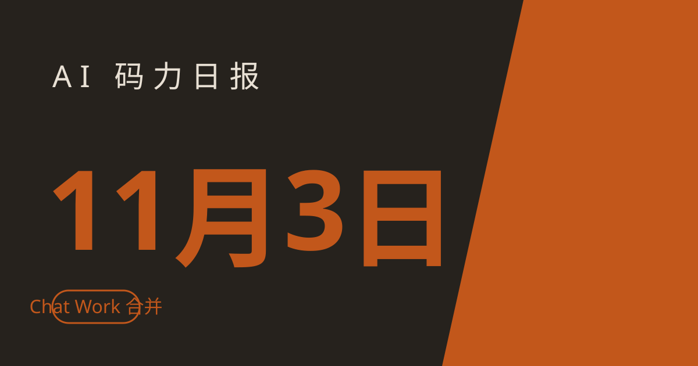

AI 码力日报 · 2026年11月3日

⚡ 一句话速览
- OpenAI 把 Chat 和 Work 合并了：先给部分用户灰度，从想法到让它把活干完不用再切标签页；但 12 月 31 日起，ChatGPT 和 Codex 要共用同一个额度池。
- Anthropic 给长会话 agent 发了个提速补丁：Message Threads 公开 Beta，50 万~100 万 token 的请求首字延迟中位数降约 35%，token 用量不变。
- Google 复盘了十月：Gemini 4 Carbon 在第三方 GDPx 基准里紧追 Claude Opus 5.5，但每任务成本只要约 16 美元，不到对手的三分之一。
- Meta 又要去债市拿钱了：据报道拟发至少 200 亿美元债券给 AI 基建续命，同一周标普刚把它的评级展望调成负面。
🤖 今日 AI Coding 动态
OpenAI 把 ChatGPT 的 Chat 和 Work 合成一个入口：先灰度，12 月 31 日起共用额度
跟你有啥关系：如果你平时在 Chat 里聊想法、在 Work 里让它干活，以后这两步不用再切标签页——但代价是额度要合在一起算，写代码多的人得重新规划用量。据 TechCrunch 11 月 2 日报道，OpenAI 已向用户发邮件：Chat 和 Work 将合并为一个体验，先给部分用户试用、收集反馈后再广泛铺开；合并后可以在一个地方带文件和插件，让 ChatGPT 建网站、做演示、在网上替你办事，同时自己审阅和引导它的工作；桌面 App 里的 Codex 仍保持独立体验。关键变化在额度：OpenAI 同时宣布，从 12 月 31 日起，ChatGPT 和 Codex 将从同一个额度池里扣 token，Instant 模式的聊天不计入共享额度。我的判断：入口合并是好事，省的是切换成本；但共享额度是实打实的收紧——11 月先去用量页看看自己两边各花多少，别等到 12 月 31 日才发现代码任务把聊天额度吃光了。原文链接
Anthropic Message Threads 公开 Beta：长会话 agent 的首字延迟降约 35%，token 一分不少
跟你有啥关系：跑长会话 coding agent、computer-use agent 的人最懂这个痛：每轮都要把整段对话重发一遍，首字等得越久，agent 越像在卡壳。Anthropic 11 月 2 日推出了 Message Threads 公开 Beta：Messages API 应用在首次完整对话请求之后，后续只需发新增消息；Anthropic 称，在 Claude Code 默认开启线程的大多数用户里，50 万~100 万 token 的请求首字时间中位数下降约 35%。先把预期摆正：服务端每轮仍会读完整对话，所以 token 用量不变，省的是延迟不是钱；流式场景下要等到 message_stop 事件后再发继续请求，否则可能 404；线程不支持 Message Batches、token 计数、按需压缩和多数上下文编辑，也没有列出、读取或删除线程的 API。Beta 覆盖原生 Claude Platform、AWS 上的 Claude Platform、Microsoft Foundry 里的 Claude 以及 Google Cloud 上由 Anthropic 管理的 Claude 模型，全部模型可用。我的判断：这是给长会话 agent 的纯体验优化，先在延迟敏感的 agent 上开 Beta 测一轮，别指望它帮你省 token；上线前把流式续跑的时序测好，404 比慢更难缠。原文链接
Google 十月复盘：Gemini 4 Carbon 还没全面开卖，性价比账已经先算出来了
跟你有啥关系：选模型不只看谁分高，还要看每任务烧多少钱——Google 十月复盘里最值得抄的一张表，恰好是第三方替它算的这笔账。Google 11 月 2 日复盘了十月的一连串发布：Gemini 4 Argon 全球上线、两周后又推出 Gemini 4 Carbon（号称史上最强的长程工程与网络安全防御模型，目前只在 Fairwind 计划里给美国政府和部分受信任的网络安全防御者做预发布测试），还有 Genie 4、SynthID 扩展等。跑分方面分两层看：Google 自家数据称 Carbon 在 Artificial Analysis Intelligence Index 上得 59 分、SEC-bench Pro 上 88.2%，这是厂商口径、等独立复现再信；第三方 SemiAnalysis 的 GDPx 基准（206 项金融、材料、网络安全、软件工程、法律、生物等任务）里，Anthropic 的 Claude Opus 5.5 排第一，Carbon 紧随其后，但成本差得很大——Claude 每任务约 51 美元，Carbon 只要约 16 美元出头，而 GPT-6 Astra 分更低、每任务却要约 54 美元。我的判断：Carbon 的故事不是"最强"，而是"够强且便宜得多"；等它全面开放后，批量 agent 任务先拿它和 Opus 5.5 做 A/B，省下来的钱可能比那点分差更实在。原文链接
Meta 拟发至少 200 亿美元债：AI 基建的账单，正在从股权转向债市
跟你有啥关系：这不是模型新闻，但它决定了大厂未来两年扩算力的节奏——债发得顺不顺，会传导到所有人的 API 价格和供给。路透 11 月 2 日援引彭博报道：Meta 正筹备至少 200 亿美元的跨境债券发行，已请花旗和摩根士丹利在周一、周二与投资者沟通；美元债期限约 5~30 年，欧元债约 4 年至 38 年以上，最终规模看需求而定。背景是 Meta 一周前刚公布约 975 亿美元的有史以来最大规模股权融资计划，而标普上周五刚把 Meta 的评级展望从"稳定"调为"负面"，理由是资本开支和自由现金流的不确定性。我的判断：股权+债券两条腿一起上，说明 Meta 的基建账单已经大到单一渠道不够用了；盯着这次发债的票面利率看——那就是市场给"AI 基建"定的真实风险溢价，比任何发布会都诚实。原文链接
OpenAI 同日上线 Grid Protectors：算力园区要在电网吃紧时主动让电
跟你有啥关系：数据中心扩建卡在哪？很多时候不是卡在芯片，是卡在电网接不接得下——OpenAI 现在想把"让电"写进园区运营的默认动作里。OpenAI 11 月 2 日上线了 Grid Protectors 计划：未来的算力园区要在电网承压时主动降低用电需求，首站是佐治亚州 Effingham County 的园区，协议提供最高 1000 兆瓦的灵活需求响应；OpenAI 承诺承担该项目所需的全部基建和供电成本。这和它前一天"数据中心改名 AI 计算园区"的公关动作是同一条线：名字要改，电网那边的账也要先算清楚。我的判断：对开发者来说这事不直接改变 API，但它会影响新园区的选址和投产速度——算力供给的瓶颈正在从芯片往电力转移，看大厂财报时多看一眼"电力"这个词出现的频率。原文链接
📱 AI 应用新品
Canva Affinity 登陆 iPad：素描、矢量、修图、排版塞进一个免费 App
是什么：Canva 11 月 2 日发布了 iPad 版 Affinity，把素描、矢量图形、照片编辑和页面排版合进一个为触屏和 Apple Pencil 打造的界面，还带了新的 Sketch Studio。解决什么问题：以前在 iPad 上做设计，画草图、画矢量、修图、排版得在几个 App 之间倒；现在一个 App 里能走完大半流程。免费额度/价格：核心的素描、矢量、照片与排版工具对个人免费，但需要一个免费 Canva 账号；AI 工具（生成式扩展、图片放大、降噪、图层分解等）仍需 Canva 高级订阅；上线时缺 Books、批量处理、数据合并等部分桌面功能，后续会补。适合谁：用 iPad 画图、做海报、排版的普通用户和学生；注意要 iPadOS 18.0 以上，AI 功能别指望免费版。原文链接
🐑 今日羊毛
Google Skills 免费课：金融与法律两个行业的 Gemini 课包，GEAR 还送 35 积分
一句话：Google Cloud 10 月 30 日在博客里上架了两套免费的 Gemini 行业课包（金融服务 4 支 15 分钟视频、法律 5 支 15 分钟视频），想往生产级 agent 走的人还能报免费的 GEAR 计划拿 35 个实训积分。
- 怎么薅：打开 Google Skills（Google Cloud 的 AI 学习平台），搜 Gemini for Financial Services 或 Gemini for Legal 课包直接看；想动手练的再注册免费的 Gemini Agent Ready（GEAR）计划，拿 35 积分进交互式实训环境。直达链接
- 有效期：免费课包截至撰写时可看（以 Google Skills 页面实时状态为准）
- 适合谁：金融、法律行业里想快速上手 Gemini 的从业者，以及想练 agent 落地又不想先掏钱的学生和开发者
Z.ai 初创计划：最高 10 亿 token 的 GLM 免费额度，正在开放申请
一句话：Z.ai（智谱）的初创计划给入选的早期团队最高 10 亿 token 的免费 API 额度，覆盖 GLM 模型，另附量价优惠、技术指导、优先支持和新模型抢先体验。
- 怎么薅：在 startup.z.ai 用 Z.ai 账号提交申请表，等官方审核；通过后额度与资源进账。直达链接
- 有效期：申请开放中（截至撰写时），以申请页实时规则为准
- 适合谁：做 AI 原生产品的早期创业团队；个人开发者不符合条件，别凑这条
Google AI Pro 学生版：美国大学生一年免费，12 月 31 日前领
一句话：美国 18 岁以上在读大学生验证学籍后可免费领一年 Google AI Pro，到期后按每月 19.99 美元续费——记得在到期前取消。
- 怎么薅：打开 one.google.com/ai-student，点 Claim Free Student Plan，用学校身份验证后领取。直达链接
- 有效期：2026 年 12 月 31 日前领取（截至撰写时），领后一年内有效，到期自动续费前务必取消
- 适合谁：在美国读书的留学生；中国区学生领不了，别浪费时间去试
⭐ 今日 GitHub 热门项目
cjpais/Handy：免费、离线、开源的听写 App，按住快捷键说话就粘贴成文字
一句话介绍：桌面端语音转文字工具，按住快捷键、说话、松开，文字就直接粘贴到当前光标处，全程本机转录、不经过云端。解决什么问题：不想把语音交给云端听写服务、又不想为听写按月付费的人，Handy 把 Whisper、Parakeet V3、Moonshine 等本地模型装进一个跨平台 App，Mac、Windows、Linux 都能用。⭐ 约 36,000（截至撰写时，11 月 2 日趋势榜数据）。适合：天天写文档、回消息、给 agent 口述指令又在意隐私的人；注意它不是实时流式听写，松开后等 2~5 秒才出文字，AI 润色默认关闭、要自己接 key 才开。项目地址
shiyu-coder/Kronos：把 K 线当语言训的基础模型，45 家以上交易所的数据喂出来的
一句话介绍：面向金融市场的开源基础模型家族，把连续的 K 线数据离散化成 token 再用 Transformer 预训练，覆盖预测、波动率、合成序列等任务。解决什么问题：通用时间序列模型不懂市场数据的脾气，Kronos 专为 K 线而生，训练数据来自 45 家以上全球交易所，权重从 4.1M 到 499.2M 参数多档可选，MIT 协议。⭐ 约 28,000（截至撰写时）。适合：做量化研究、金融时间序列实验的人；先说清楚——这是研究软件不是交易系统，作者自己也提醒回测只是简化演示，真金白银别直接跟它的预测走。项目地址
FlashML-org/FreeToken：把数据中心级模型服务搬到你的台式机上
一句话介绍：面向边缘设备的 MoE 服务引擎，让大体量开源模型能在个人与消费级硬件上跑起来，又快又省。解决什么问题：大模型动不动就要数据中心级硬件，FreeToken 想把这道门槛打下来，让本地跑大 MoE 模型从"理论上能"变成"桌面上真能"。⭐ 约 15,400（截至撰写时，11 月 2 日单日 +242）。适合：想在本地折腾大模型推理、不想先租卡的人；注意这是偏底层的基础设施项目，先看它对你手头模型架构的支持清单再动手。项目地址
🤗 Hugging Face 热门模型
MiniMaxAI/MiniMax-M2.5：本周 HF 趋势快照前排的 MiniMax 开源权重
是什么：MiniMaxAI 的 M2.5 开源权重，在本周 HF 趋势快照里排在前列：下载约 130 万、点赞约 1500（截至撰写时，快照数据），一周前刚更新。能干嘛：API 调用最现实，也可以在自己的 infra 上自托管部署；具体参数规模与许可条款以上架页为准，别按旧款 M 系列的经验直接套。适合谁：想试 MiniMax 新一代开源模型、评估它在自己任务上表现的团队；先拿 API 或小规模部署验效果，再决定要不要放大投入。模型地址
🛠️ 值得一试的工具：Recall
是什么：知识库工具：把文章、视频、资料存成卡片，聊天时按语义找段落；11 月 2 日的更新给聊天和 MCP 接入的 App 加了精确词组查找、整卡通读等检索工具，Gmail 保存也更好用了，年龄受限的 YouTube 视频现在也能转录进库。解决什么痛点：资料越攒越多，问的时候只搜到"大概相关"不够用——精确查找+整卡通读补上了语义搜索漏掉的那一半；Claude、ChatGPT、Cursor 通过 Recall 的 MCP 服务器也能用同一套检索工具。免费额度：以官网当前方案为准，这次更新本身不改价格，先用现有账号试新检索工具再决定要不要升级。
verdict： 值得试——如果你已经在用 Recall 存资料，这次更新直接提升提问命中率；还没用的话，先从 Gmail 保存和 YouTube 转录这两个最省事的入口试，别一上来就全量导入旧资料。工具地址
🎓 3 分钟小教程：装好 Handy，离线听写三分钟上手
前置条件：一台 Mac、Windows 或 Linux 电脑；先从官网或 GitHub Releases 下载安装包。
- 安装 Handy（可复制）：
# Mac
brew install --cask handy
# Windows
winget install cjpais.Handy
- 打开 Handy，下载一个本地语音模型（Whisper Small 起步最轻，Parakeet V3 对 CPU 更友好），下载完之后听写就不再需要联网。
- 设一个顺手的快捷键：把光标放在任意输入框里，按住快捷键说话、松开，文字 2~5 秒后粘贴进来；AI 润色默认关闭，想开再单独接自己的 API key 或本地模型。
预期效果：三分钟内走通"安装-下载模型-按住说话-松开出字"全程，之后写文档、回消息、给 agent 口述指令都不用再打字；记住一点：转录本身完全离线，模型下载和版本检查还是要联网的。
数据截至撰写时，仅供参考。